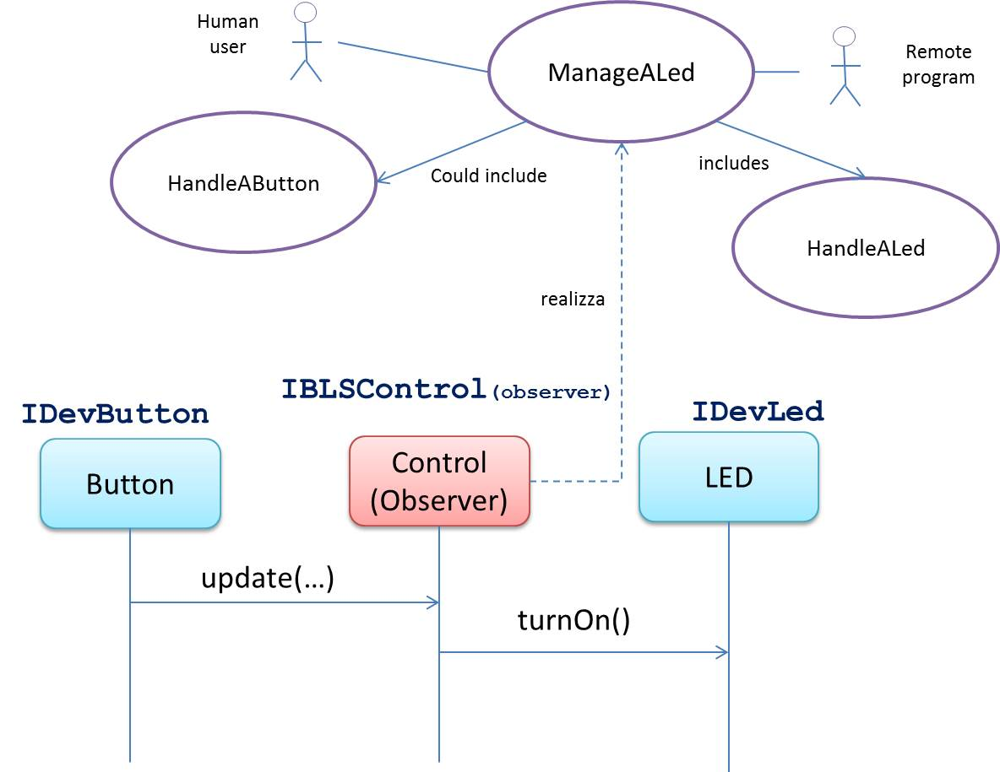
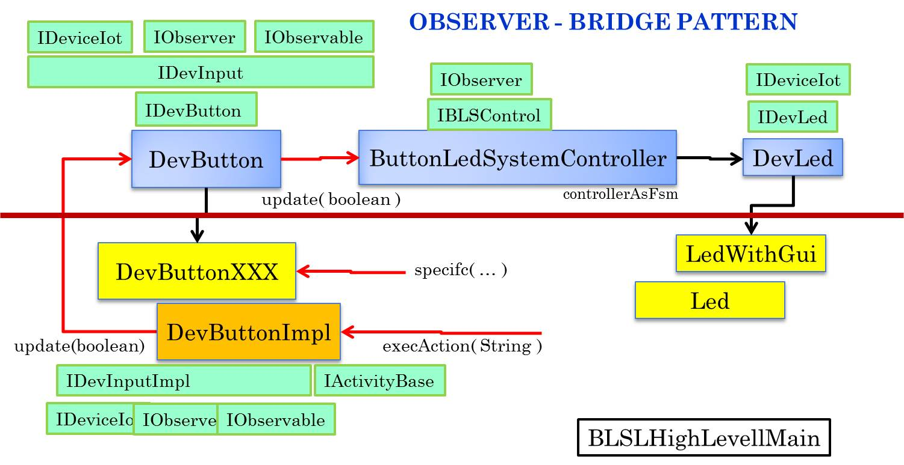

ButtonLed system : a top-down approach (ISS-DISI-Unibo)
Architecture
Logic architecture
Design architecture
MODELS
Device model
Interfaces
IDevButton.java
IDevLed.java
IBLSControl
Test (plans) for system
TestHighLevelLogic
High Level Components
DevButton
DeviceButtonImpl
BLSControlNaive
BLSControlFSM
BLSPlatformIndependent
BLS Factory
BLSFactory
HIGH level project
Raspberry projects
Logic architecture

The Led and the Button are modeled as logical devices and
should be implemented according to the
bridge design pattern
in order to decouple the abstraction from its implementation.
High level Button (BRIDGE pattern)
The program BLSWithGuiMain
defines a prototype based on concrete devices (Button and Led) by using the
defined in the project it.unibo.envBaseAwt. The following picture shows the architecture of the ssystem in which
the Button and Led are implemented as a GUI or via System.stdin .

PROJECTS
it.unibo.buttonLedSystemHL: defines the interfaces and the high-level components. See
it.unibo.buttonLedSystem.gui: defines a prototype of the system working on a PC.
We use the uniboEnvBaseAwt.jar library of uniboEnv. See BLSWithGuiSwitchMain.
it.unibo.buttonLedSystem.arduino: defines prototypes of the BLCS system with a device (the Button or the Led) on Arduino and the other one on the PC connected to Arduino. The communication support is the serial line.
We use the unibonoawtsupports.jar library of uniboComm. See BLSButtonOnArduinoMain and
DeviceButtonArduino
it.unibo.buttonLedSystem.proxy: defines a proxy and a server for the button and the led and provides an example of usage on a single PC. The communication support is a network connection based on TCP or UDP.
We use the unibonoawtsupports.jar library of uniboComm.
BLSRemoteLed and
BLSRemoteButton
it.unibo.buttonLedSystem.raspbery: defines prototypes of the BLCS system with two devices or just one device connected to the Raspberry (the other one to PC or to Arduino). See raspberryProjectsHL